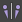

典型两足动物骨架中的多个骨骼由身体反面中的另一骨骼镜像。例如，右上臂由左上臂镜像，右脚由左脚镜像。除了作为指示该骨架是否位于角色的右侧或左侧的名称的一部分以外，许多骨架命名约定还会将相同的名称指定给这些已镜像的骨骼。例如，右前臂为 Character_R_ForeArm，且左前臂为 Character_L_ForeArm。
如果骨架中使用的命名约定遵循该标准类型，则可以使用镜像匹配模式，以自动映射已镜像的骨骼。（请参见为 HumanIK 定义现有骨架。）
激活镜像匹配模式
- 执行下列操作之一：
- 选择
 > “编辑角色定义 > 配置镜像匹配”(Edit Character Definition > Configure Mirror Matching)。
> “编辑角色定义 > 配置镜像匹配”(Edit Character Definition > Configure Mirror Matching)。
- 在“定义”(Definition) 选项卡工具栏中单击。
在身体的反面中使用镜像对映射骨骼时，该工具将检查选定骨骼的名称，查看它是否包含通常用来指示骨骼位于身体左侧或右侧的任何子字符串的预设列表。如果它找到这些子字符串之一，则会查找另一个与当前骨骼具有相同、但其镜像对子字符串与身体另一侧对应的骨骼。如果在骨架中找到该骨骼，则该骨骼将自动映射到身体另一侧对应的节点中。
例如，如果将右肘节点映射到名为 Character_R_ForeArm 的骨骼，则“定义”(Definition)选项卡工具栏会将 R_ 替换为 L_，并将名为 Character L_ForeArm（如果存在）的骨骼映射到左肘节点。
- 选择
如果在骨骼命名约定中使用不同的子字符串来指示身体的左侧和右侧，则可以将 HumanIK 窗口检查过的新子字符串对添加到列表中。
配置镜像匹配中使用的子字符串对
- 选择 >“编辑角色定义 > 配置镜像匹配”(Edit Character Definition > Configure Mirror Matching)以打开“镜像配置”(Mirror Configuration)窗口。
该窗口包含当前为镜像匹配模式配置的所有子字符串对列表。
- 在“镜像配置”(Mirror Configuration)窗口中，执行以下任一操作：
- 若要添加新的子字符串对，请单击 + 按钮，将新行添加到该表中。在新行中，为身体的左侧和右侧输入子字符串。
- 若要移除子字符串对，请在表中选择要移除的行，并单击 - 按钮。
- 配置完子字符串对之后，请单击“确定”。